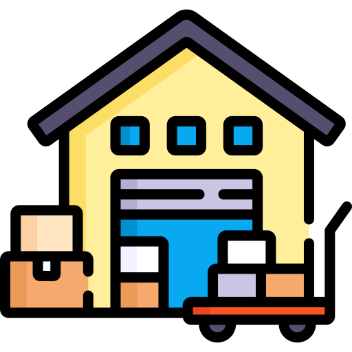
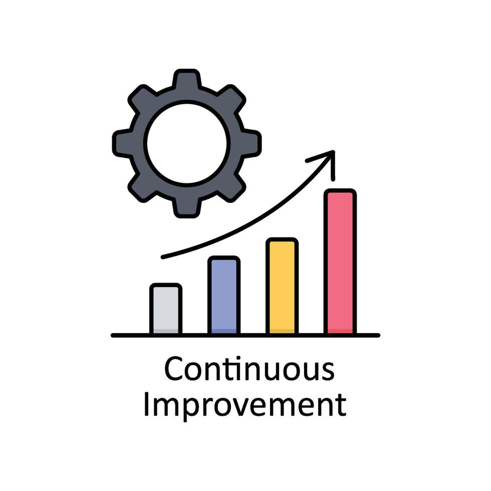
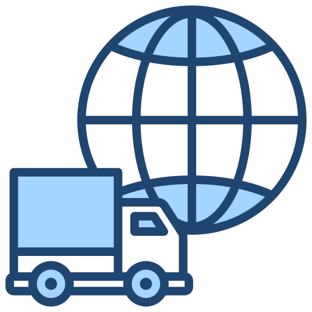

Experience

Senior Stock Clerk
SCM Department (2014-2022)
- Processed SAP ERP documents and transactions.
- Managed inventory planning and replenishment.
- Performed demand forecasting and delivery scheduling.
- Optimized procurement and supplier performance.
- Generated inventory and stock reports.
- Conducted inventory audits and stock checks.
- Created SAP transfer orders for material movement.
- Monitored stock levels and inventory accuracy.

Senior Automation SPECIALIST
CI Team (2022-2023)
- Developed VBA macros to automate repetitive tasks and reports.
- Created Excel automation tools to improve process efficiency.
- Automated data consolidation and report generation.
- Optimized workflows through process automation solutions.
- Maintained and enhanced existing VBA applications.
- Analyzed business requirements and translated them into automated solutions.
- Collaborated with operations teams to streamline processes.

Ocean Customer Experience SPECIALIST
OTCX Team (2023 - Present)
- Coordinated freight movements and cargo bookings.
- Managed shipment scheduling and carrier coordination.
- Handled import and export documentation.
- Ensured customs and regulatory compliance.
- Monitored shipment tracking and status reporting.
- Resolved logistics issues and delivery delays.
- Collaborated with supply chain stakeholders.
- Provided customer support and communication.